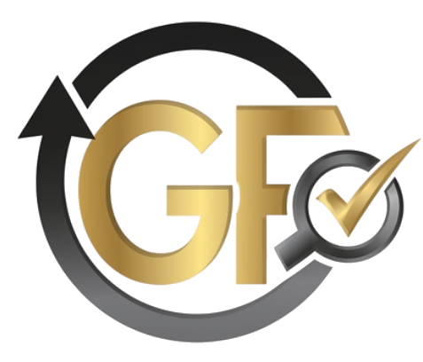

Independent Auditing & Assurance
Delivering accurate, transparent, and insightful financial evaluations for businesses, nonprofits, and government entities — grounded in over 20 years of expertise.
Why Gerry Fisher Auditing
Every engagement is built on transparency and accountability. Our clients rely on us to deliver findings they can act on with confidence.
We don't miss details. Our rigorous, methodical approach ensures every figure, every risk, and every discrepancy is identified and documented.
We go beyond the surface. Independent, objective verification gives your stakeholders the assurance they need to make sound decisions.
What We Do
From financial statement audits to forensic investigations, we bring the expertise your organization needs.
Independent examination of financial records to provide stakeholders with confidence in accuracy and GAAP compliance.
Systematic evaluation of internal controls, governance, and risk management to strengthen operational resilience.
Ensuring adherence to applicable laws, regulations, and industry standards — including SOX compliance reviews.
Investigative auditing to uncover financial irregularities, misappropriation of assets, and fraudulent activity.
Strategic recommendations to enhance efficiency, reduce risk exposure, and build stronger financial operations.
We'll assess your needs and recommend the right audit approach — at no cost to you.
Get Free ConsultationOur Purpose
To be the trusted partner for organizations seeking clarity, confidence, and strategic insight through high-quality, independent auditing services.
"Precision You Can Trust"
To deliver reliable, detail-driven auditing solutions that give clients the clarity and confidence they need — through integrity, expertise, and a steadfast dedication to accuracy.
Who We Serve
Whether you're a startup or an established institution, we have the experience to meet your audit needs.
Audit and advisory services scaled to your size and budget, with enterprise-level rigor.
Investor-ready financial statements and internal controls to fuel your next stage of growth.
Specialized audit services that satisfy board requirements, grant obligations, and donor confidence.
Independent audit engagements that satisfy regulatory requirements and protect stakeholder interests.
Schedule a free consultation and let's discuss what a tailored audit engagement looks like for your organization.